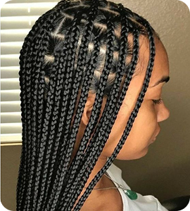
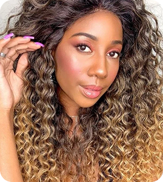
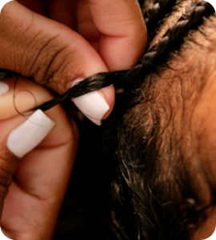
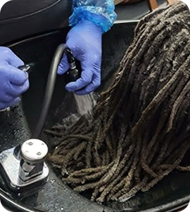
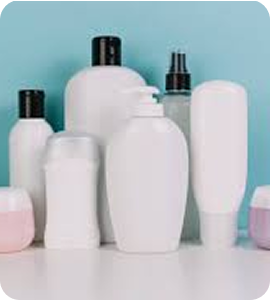

Embutidas com extensão
AGENDAR


Tendências
Serviços
Tranças
Lace
Aplique
Manutenção
Hidronutrição
Cuidados
Contato
Olá! Sou a Helô, trancista profissional especializada em penteados afro.
Atuo na área há mais de 6 anos, transformando não apenas cabelos, mas também
a autoestima de centenas de mulheres, homens e crianças.
Minha paixão por tranças começou ainda na adolescência, e com o tempo fui
me profissionalizando através de cursos, workshops, atendimentos em eventos
culturais, editoriais de moda e feiras de beleza. Acredito que cada cabelo
tem sua história e cada trança é uma forma de expressão única.
R. Dr. João Ribeiro, 304 - Penha de França, São Paulo - SP, 03634-900
Empresas parceiras